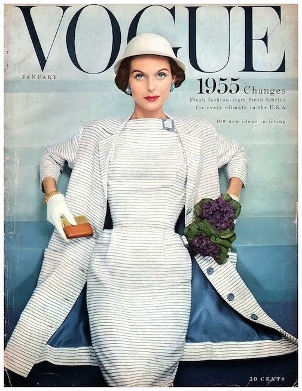
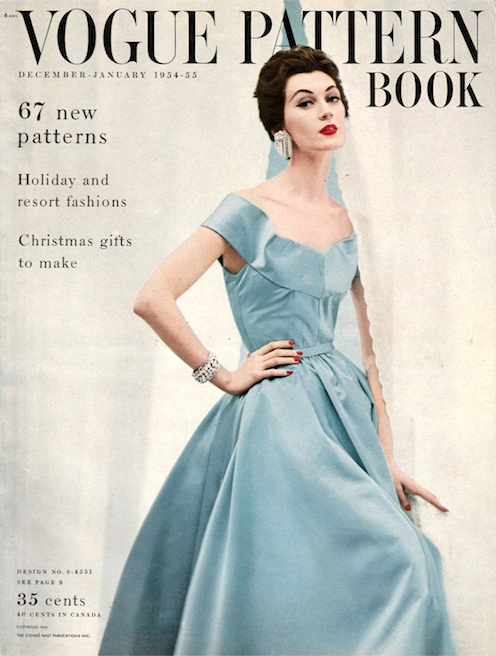
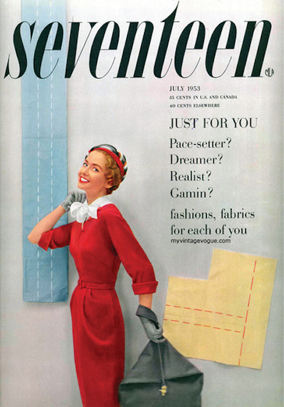
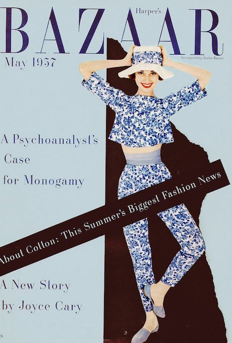
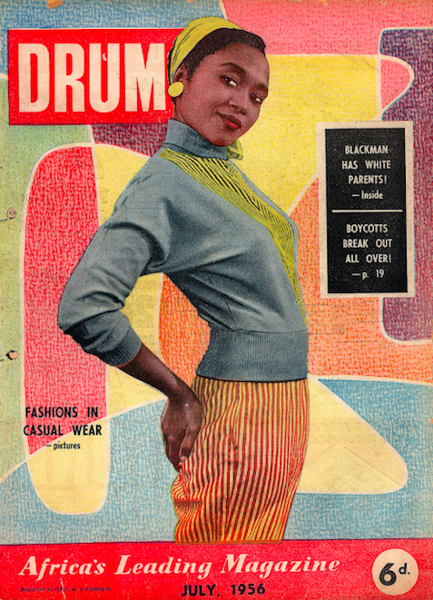
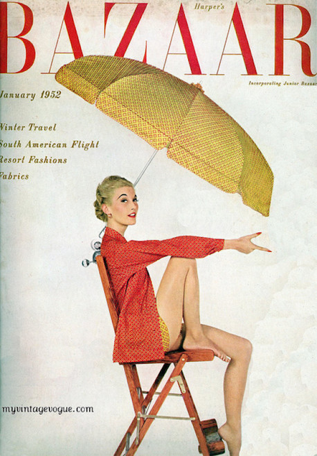

1950
1950 Post War Era
By the start of the 1950s, the fashion scene was yet again at the forefront of American culture, perhaps more so than ever before. The decade was marked by economic boom and a giant push towards consumerism, a trend that continues today. Once WWII came to an end, rationing became a thing of the past, as the availability and accessibility of several different types of fabrics became the norm.






HOME